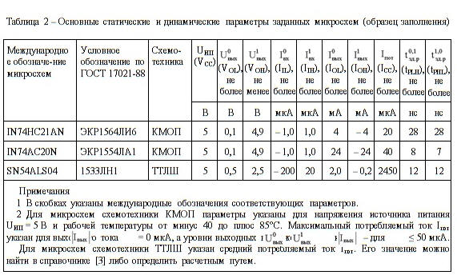

электронный ресурс по учебной дисциплине 1-58 01 01 - "Инженерно-психологическое обеспечение информационных технологий"
|
||
| Оглавление | Программа | Теория | Практика | Контроль знаний | Об авторах | ||
|
Практика ПРАКТИЧЕСКАЯ РАБОТА № 5 ИЗУЧЕНИЕ ИНТЕГРАЛЬНЫХ ЛОГИЧЕСКИХ И БУФЕРНЫХ ЭЛЕМЕНТОВ. Работа со справочником Цель работы 1 Изучить основные статические и динамические параметры интегральных ЛЭ транзисторно-транзисторной логики с диодами Шотки (схемотехники ТТЛШ) и схемотехники КМОП. 2 Приобрести практические навыки работы со справочной литературой и умение подбирать интегральные логические и буферные элементы с требуемыми параметрами. Вопросы для самоконтроля 1 Укажите основные статические и динамические параметры интегральных ЛЭ, поясните их физический смысл и единицы измерения. 2 Поясните взаимосвязь между быстродействием интегральных ЛЭ, потребляемой мощностью и помехоустройчивостью. 3 Поясните, почему выходные токи и имеют разные знаки? Покажите их направление на УГО инвертора. 4 Укажите напряжение источника питания для микросхем схемотехники ТТЛШ и современных серий схемотехники КМОП. 5 Поясните, какие параметры интегральных ЛЭ и как можно определить по передаточной характеристике? 6 Зарисуйте УГО основных ЛЭ по ГОСТ 2.743-91 и их международные варианты. 7 Укажите схемотехнические особенности цифровых элементов (логических, запоминающих, буферных) с логическим выходом, с открытым коллектором (стоком), с третьим или Z-состоянием. Зарисуйте их УГО, принципиальную электрическую схему выходного каскада, поясните принцип работы, укажите достоинства и недостатки. Порядок выполнения работы 1 Выполнить индивидуальное задание № 1. Изучить микросхемы интегральных логических и буферных элементов разных схемотехнических типов (таблица 1). Таблица 1 – Исходные данные к индивидуальному заданию № 1
2.1 Выбрать из таблицы 1 заданную микросхему интегрального ЛЭ схемотехники ТТЛШ для заданного варианта и найти ее в справочнике [8], используя алфавитно-цифровой указатель. Номер варианта соответствует последней цифре номера студента в списке учебного журнала группы, за исключением варианта № 10, который выполняют студенты, имеющие в списке группы номер 10, 20 или 30. Затем выбрать из таблицы 1 заданные микросхемы интегрального логического или буферного элементов схемотехники КМОП и найти их в приложении Б. 2.2 Зарисовать по [8] и приложению B УГО заданных микросхем, таблицы истинности и проставить номера выводов. Указать выполняемые логические операции. 2.3 Определить по [8] и приложению Б основные статические и динамические параметры заданных микросхем. Результаты записать в таблицу, аналогичную по форме таблице 2. 
2.4 Проанализировать данные таблицы 2 и сделать сравнительную характеристику интегральных ЛЭ различных схемотехнических типов, указать их достоинства и недостатки. 2 Выполнить индивидуальное задание № 2 (таблица 3). По заданной логической операции, типу схемотехники и типу выхода выбрать микросхему. Таблица 3 – Исходные данные к индивидуальному заданию № 2
3.1 Подобрать по справочнику [8] или приложению Б микросхему схемотехники ТТЛШ или КМОП в соответствии с заданными в таблице 3 требованиями. Для подбора микросхемы схемотехники ТТЛШ следует использовать таблицу 2.2 в справочнике [8]. Для подбора микросхемы схемотехники КМОП следует использовать приложение Б. Указать возможные варианты микросхем, соответствующих заданию, и выбрать одну из них с лучшими параметрами. 3.2 Зарисовать УГО выбранной микросхемы и таблицу истинности, указать ее условное обозначение, а также записать в таблицу 2 основные статические и динамические параметры. 3 Ответить на контрольные вопросы. 4 Оформить отчет и сдать зачет. Содержание отчета Отчет должен содержать: 1 Наименование и цель лабораторной работы. 2 Выполненные индивидуальные задания № 1, 2 (условия и ответы). 3 Ответы на контрольные вопросы. Контрольные вопросы 1 Укажите назначение, УГО и особенности интегральных ЛЭ с третьим состоянием на выходе. 2 Укажите назначение, УГО и особенности интегральных ЛЭ с открытым коллектором (стоком). 3 Укажите назначение, УГО и особенности интегральных ЛЭ с логическим выходом. 4 Укажите назначение, УГО и особенности буферных элементов и двунаправленных приемопередатчиков. Требования к знаниям и умениям студентов В результате выполнения лабораторной работы студент должен знать: – основные статические и динамические параметры интегральных ЛЭ, их физический смысл и единицы измерения; – количественные значения основных статических и динамических параметров интегральных ЛЭ схемотехники ТТЛШ и КМОП. Должен уметь: – определять параметры интегральных логических и буферных элементов по справочнику; – подбирать по справочнику интегральные логические и буферные элементы с заданными параметрами.
| |||
| (С) БГУИР |